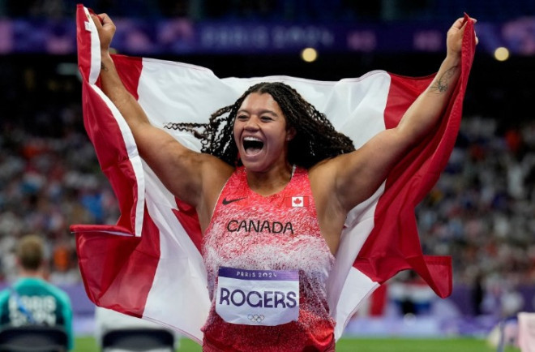
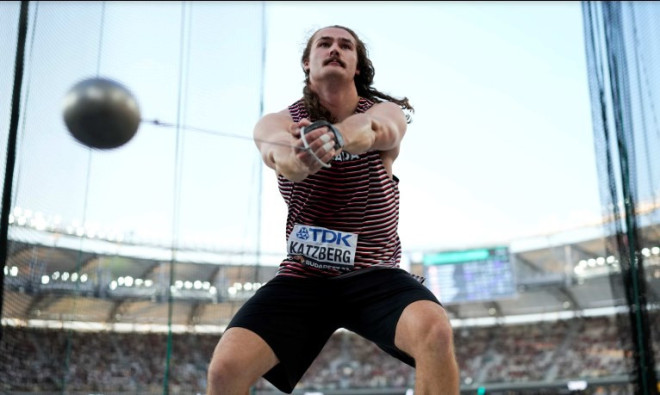
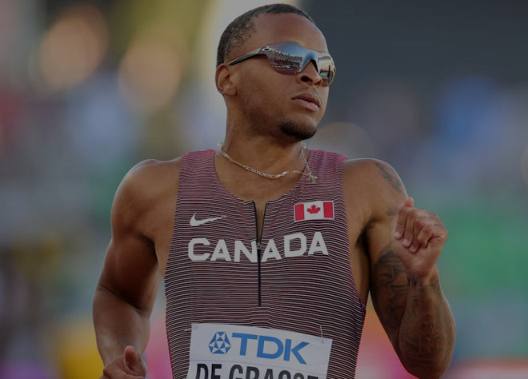

加拿大女选手Camryn Rogers在6日举行的链球比赛中赢得金牌，创造了历史，成为该项目中首位获得奖牌的加拿大女子选手。两天前加拿大男选手Ethan Katzberg在男子链球比赛中获得金牌，成为自1912年以来首位在该项目上获得奥运奖牌的加拿大人。据报道两个人都来自BC省。最新消息，万锦短跑名将Andre De Grasse继百米失利后，今天在200米半决赛中再遭淘汰。

据报道，Camryn Rogers在比赛前被视为夺冠热门，她在第四次尝试中投出了76.97米，这是她的最好成绩。没有其他选手超过这个数字，因此她锁定了金牌，美国的Nneka Annette Echikunwoke和中国的赵洁也登上了领奖台。
这不是她在本届奥运会上唯一的出色表现，她在资格赛中投出了第二远的距离，达到了74.69米。
这位来自大温Richmond的选手是第二次参加奥运，她以第五名的成绩成为首位晋级女子链球决赛的加拿大女子选手。
Rogers目前是世界排名第一的链球选手，在本届奥运会之前，她在2022年世界锦标赛上获得银牌，并在去年的世界锦标赛上获得金牌。她是首位也是唯一一位在链球项目上获得世界锦标赛奖牌的加拿大女子选手。
这也是自1928年以来，加拿大女子在奥运会上首次在田径项目上获得金牌。

在此之前，Rogers的同乡、来自BC省Nanaimo的Ethan Katzberg在男子链球比赛中获得金牌，成为自1912年以来首位在该项目上获得奥运奖牌的加拿大选手。他的成绩为84.12米。
加拿大上一次在此项目上获得奖牌是Duncan Gillis在1912年斯德哥尔摩奥运会上获得链球银牌。
在今天举行的男子200米半决赛中加拿大短跑名将Andre De Grasse再次未能进入巴黎奥运会的决赛。
这位29岁的加拿大明星在周三的巴黎2024年奥运会男子200米半决赛中被淘汰。
这位现任奥运会200米冠军在第一组比赛中以20.41秒的成绩获得第三名。每组前两名选手以及下两名最好成绩选手晋级决赛。由于在第二组比赛中的第三名和第四名选手成绩优于他，De Grasse被淘汰。

De Grasse这次的成绩远低于他的个人最佳成绩19.62秒。
来自万锦的这位六次奥运奖牌得主，此前在100米半决赛中也被淘汰。